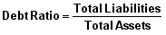
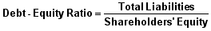
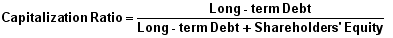
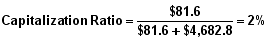
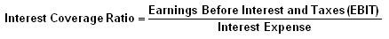
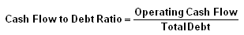

Debt Ratios: Introduction
The third series of ratios in this tutorial are debt ratios. These ratios give users a general idea of the company's overall debt load as well as its mix of equity and debt. Debt ratios can be used to determine the overall level of financial risk a company and its shareholders face. In general, the greater the amount of debt held by a company the greater the financial risk of bankruptcy.
The next chapter of this Debt Ratios section (Overview of Debt) will give readers a good idea of the different classifications of debt. While it is not mandatory in understanding the individual debt ratios, it will give some background information on the debt of a company. The ratios covered in this section include the debt ratio, which is gives a general idea of a company's financial leverage as does the debt-to-equity ratio. The capitalization ratio details the mix of debt and equity while the interest coverage ratio and the cash flow to debt ratio show how well a company can meet its obligations.
To find the data used in the examples in this section, please see the Securities and Exchange Commission's website to view the 2005 Annual Statement of Zimmer Holdings.
Debt Ratios: Overview Of Debt
Before discussing the various financial debt ratios, we need to clear up the terminology used with "debt" as this concept relates to financial statement presentations. In addition, the debt-related topics of "funded debt" and credit ratings are discussed below.
There are two types of liabilities - operational and debt. The former includes balance sheet accounts, such as accounts payable, accrued expenses, taxes payable, pension obligations, etc. The latter includes notes payable and other short-term borrowings, the current portion of long-term borrowings, and long-term borrowings. Often times, in investment literature, "debt" is used synonymously with total liabilities. In other instances, it only refers to a company's indebtedness.
The debt ratios that are explained herein are those that are most commonly used. However, what companies, financial analysts and investment research services use as components to calculate these ratios is far from standardized. In the definition paragraph for each ratio, no matter how the ratio is titled, we will clearly indicate what type of debt is being used in our measurements.
Getting the Terms Straight
In general, debt analysis can be broken down into three categories, or interpretations: liberal, moderate and conservative. Since we will use this language in our commentary paragraphs, it's worthwhile explaining how these interpretations of debt apply.
- Liberal - This approach tends to minimize the amount of debt. It includes only long-term debt as it is recorded in the balance sheet under non-current liabilities.
- Moderate - This approach includes current borrowings (notes payable) and the current portion of long-term debt, which appear in the balance sheet's current liabilities; and, of course, the long-term debt recorded in non-current liabilities previously mentioned. In addition, redeemable preferred stock, because of its debt-like quality, is considered to be debt. Lastly, as general rule, two-thirds (roughly one-third goes to interest expense) of the outstanding balance of operating leases, which do not appear in the balance sheet, are considered debt principal. The relevant figure will be found in the notes to financial statements and identified as "future minimum lease payments required under operating leases that have initial or remaining non-cancel-able lease terms in excess of one year."
- Conservative - This approach includes all the items used in the moderate interpretation of debt, as well as such non-current operational liabilities such as deferred taxes, pension liabilities and other post-retirement employee benefits.
Investors may want to look to the middle ground when deciding what to include in a company's debt position. With the exception of unfunded pension liabilities, a company's non-current operational liabilities represent obligations that will be around, at one level or another, forever - at least until the company ceases to be a going concern and is liquidated.
Also, unlike debt, there are no fixed payments or interest expenses associated with non-current operational liabilities. In other words, it is more meaningful for investors to view a company's indebtedness and obligations through the company as a going concern, and therefore, to use the moderate approach to defining debt in their leverage calculations.
So-called "funded debt" is a term that is seldom used in financial reporting. Technically, funded debt refers to that portion of a company's debt comprised, generally, of long-term, fixed maturity, contractual borrowings. No matter how problematic a company's financial condition, holders of these obligations, typically bonds, cannot demand payment as long as the company pays the interest on its funded debt. In contrast, long-term bank debt is usually subject to acceleration clauses and/or restrictive covenants that allow a lender to call its loan, i.e., demand its immediate payment. From an investor's perspective, the greater the percentage of funded debt in the company's total debt, the better.
Lastly, credit ratings are formal risk evaluations by credit agencies - Moody's, Standard & Poor's, Duff & Phelps, and Fitch - of a company's ability to repay principal and interest on its debt obligations, principally bonds and commercial paper. Obviously, investors in both bonds and stocks follow these ratings rather closely as indicators of a company's investment quality. If the company's credit ratings are not mentioned in their financial reporting, it's easy to obtain them from the company's investor relations department.
Debt Ratios: The Debt Ratio
The debt ratio compares a company's total debt to its total assets, which is used to gain a general idea as to the amount of leverage being used by a company. A low percentage means that the company is less dependent on leverage, i.e., money borrowed from and/or owed to others. The lower the percentage, the less leverage a company is using and the stronger its equity position. In general, the higher the ratio, the more risk that company is considered to have taken on.
Formula:

Components:
{kind=link}
{kind=link}
As of December 31, 2005, with amounts expressed in millions, Zimmer Holdings had total liabilities of $1,036.80 (balance sheet) and total assets of $5,721.90 (balance sheet). By dividing, the equation provides the company with a relatively low percentage of leverage as measured by the debt ratio.
Variations:
None
Commentary:
The easy-to-calculate debt ratio is helpful to investors looking for a quick take on a company's leverage. The debt ratio gives users a quick measure of the amount of debt that the company has on its balance sheets compared to its assets. The more debt compared to assets a company has, which is signaled by a high debt ratio, the more leveraged it is and the riskier it is considered to be. Generally, large, well-established companies can push the liability component of their balance sheet structure to higher percentages without getting into trouble.
However, one thing to note with this ratio: it isn't a pure measure of a company's debt (or indebtedness), as it also includes operational liabilities, such as accounts payable and taxes payable. Companies use these operational liabilities as going concerns to fund the day-to-day operations of the business and aren't really "debts" in the leverage sense of this ratio. Basically, even if you took the same company and had one version with zero financial debt and another version with substantial financial debt, these operational liabilities would still be there, which in some sense can muddle this ratio.
For example, IBM and Merck, both large, blue-chip companies, which are components of the Dow Jones Index, have debt ratios (FY 2005) of 69% and 60%, respectively. In contrast, Eagle Materials, a small construction supply company, has a debt ratio (FY 2006) of 48%; Lincoln Electric, a small supplier of welding equipment and products, runs a debt ratio (FY 2005) in the range of 44%. Obviously, Zimmer Holdings' debt ratio of 18% is very much on the low side.
The use of leverage, as displayed by the debt ratio, can be a double-edged sword for companies. If the company manages to generate returns above their cost of capital, investors will benefit. However, with the added risk of the debt on its books, a company can be easily hurt by this leverage if it is unable to generate returns above the cost of capital. Basically, any gains or losses are magnified by the use of leverage in the company's capital structure.
Debt Ratios: Debt-Equity Ratio
The debt-equity ratio is another leverage ratio that compares a company's total liabilities to its total shareholders' equity. This is a measurement of how much suppliers, lenders, creditors and obligors have committed to the company versus what the shareholders have committed.
To a large degree, the debt-equity ratio provides another vantage point on a company's leverage position, in this case, comparing total liabilities to shareholders' equity, as opposed to total assets in the debt ratio. Similar to the debt ratio, a lower the percentage means that a company is using less leverage and has a stronger equity position.
Formula:

Components:
{kind=link}

|
As of December 31, 2005, with amounts expressed in millions, Zimmer Holdings had total liabilities of $1,036.80 (balance sheet) and total shareholders' equity of $4,682.80 (balance sheet). By dividing, the equation provides the company with a relatively low percentage of leverage as measured by the debt-equity ratio.
Variations:
A conservative variation of this ratio, which is seldom seen, involves reducing a company's equity position by its intangible assets to arrive at a tangible equity, or tangible net worth, figure. Companies with a large amount of purchased goodwill form heavy acquisition activity can end up with a negative equity position.
Commentary:
The debt-equity ratio appears frequently in investment literature. However, like the debt ratio, this ratio is not a pure measurement of a company's debt because it includes operational liabilities in total liabilities.
Nevertheless, this easy-to-calculate ratio provides a general indication of a company's equity-liability relationship and is helpful to investors looking for a quick take on a company's leverage. Generally, large, well-established companies can push the liability component of their balance sheet structure to higher percentages without getting into trouble.
The debt-equity ratio percentage provides a much more dramatic perspective on a company's leverage position than the debt ratio percentage. For example, IBM's debt ratio of 69% seems less onerous than its debt-equity ratio of 220%, which means that creditors have more than twice as much money in the company than equity holders (both ratios are for FY 2005).
Merck comes off a little better at 150%. These indicators are not atypical for large companies with prime credit credentials. Relatively small companies, such as Eagle Materials and Lincoln Electric, cannot command these high leverage positions, which is reflected in their debt-equity ratio percentages (FY 2006 and FY 2005) of 91% and 78%, respectively.
Debt Ratios: Capitalization Ratio
The capitalization ratio measures the debt component of a company's capital structure, or capitalization (i.e., the sum of long-term debt liabilities and shareholders' equity) to support a company's operations and growth.
Long-term debt is divided by the sum of long-term debt and shareholders' equity. This ratio is considered to be one of the more meaningful of the "debt" ratios - it delivers the key insight into a company's use of leverage.
There is no right amount of debt. Leverage varies according to industries, a company's line of business and its stage of development. Nevertheless, common sense tells us that low debt and high equity levels in the capitalization ratio indicate investment quality.
Formula:
|  |
{kind=link}
Components:
|  |
{kind=link}
As of December 31, 2005, with amounts expressed in millions, Zimmer Holdings had total long-term debt of $81.60 (balance sheet), and total long-term debt and shareholders' equity (i.e., its capitalization) of $4,764.40 (balance sheet). By dividing, the equation provides the company with a negligible percentage of leverage as measured by the capitalization ratio.
Variations:
None
Commentary:
A company's capitalization (not to be confused with its market capitalization) is the term used to describe the makeup of a company's permanent or long-term capital, which consists of both long-term debt and shareholders' equity. A low level of debt and a healthy proportion of equity in a company's capital structure is an indication of financial fitness.
Prudent use of leverage (debt) increases the financial resources available to a company for growth and expansion. It assumes that management can earn more on borrowed funds than it pays in interest expense and fees on these funds. However successful this formula may seem, it does require a company to maintain a solid record of complying with its various borrowing commitments.
A company considered too highly leveraged (too much debt) may find its freedom of action restricted by its creditors and/or have its profitability hurt by high interest costs. Of course, the worst of all scenarios is having trouble meeting operating and debt liabilities on time and surviving adverse economic conditions. Lastly, a company in a highly competitive business, if hobbled by high debt, will find its competitors taking advantage of its problems to grab more market share.
As mentioned previously, the capitalization ratio is one of the more meaningful debt ratios because it focuses on the relationship of debt liabilities as a component of a company's total capital base, which is the capital raised by shareholders and lenders.
The examples of IBM and Merck will illustrate this important perspective for investors. As of FY 2005, IBM had a capitalization ratio of 32%, and Merck's was 22%. It is difficult to generalize on what a proper capitalization ratio should be, but, on average, it appears that an indicator on either side of 35% is fairly typical for larger companies. Obviously, Merck's low leverage is a significant balance sheet strength considering its ongoing struggle with product liability claims. Eagle Materials and Lincoln Electric have capitalization ratios (FY 2006 and FY 2005) of 30% and 20%, which most likely fall into the average and low ratio range, respectively. Zimmer Holdings' 2% capitalization ratio needs no further comment.
Debt Ratios: Interest Coverage Ratio
The interest coverage ratio is used to determine how easily a company can pay interest expenses on outstanding debt. The ratio is calculated by dividing a company's earnings before interest and taxes (EBIT) by the company's interest expenses for the same period. The lower the ratio, the more the company is burdened by debt expense. When a company's interest coverage ratio is only 1.5 or lower, its ability to meet interest expenses may be questionable.
Formula:

Components:
{kind=link}
{kind=link}
As of December 31, 2005, with amounts expressed in millions, Zimmer Holdings had earnings before interest and taxes (operating income) of $1,055.00 (income statement), and total interest expense of $14.30 (income statement). This equation provides the company with an extremely high margin of safety as measured by the interest coverage ratio.
Variations:
None
Commentary:
The ability to stay current with interest payment obligations is absolutely critical for a company as a going concern. While the non-payment of debt principal is a seriously negative condition, a company finding itself in financial/operational difficulties can stay alive for quite some time as long as it is able to service its interest expenses.
In a more positive sense, prudent borrowing makes sense for most companies, but the operative word here is "prudent." Interest expenses affect a company's profitability, so the cost-benefit analysis dictates that borrowing money to fund a company's assets has to have a positive effect. An ample interest coverage ratio would be an indicator of this circumstance, as well as indicating substantial additional debt capacity. Obviously, in this category of investment quality, Zimmer Holdings would go to the head of the class.
Let's see how the interest coverage ratio works out for IBM, Merck, Eagle Materials and Lincoln Electric: 57, 20, 39 and 20, respectively. By any standard, all of these companies, as measured by their latest FY earnings performances, have very high interest coverage ratios. It is worthwhile noting that this is one of the reasons why companies like IBM and Merck have such large borrowings - because in a word, they can. Creditors have a high comfort level with companies that can easily service debt interest payments. Here again, Zimmer Holdings, in this regard, is in an enviable position.
Debt Ratios: Cash Flow To Debt Ratio
This coverage ratio compares a company's operating cash flow to its total debt, which, for purposes of this ratio, is defined as the sum of short-term borrowings, the current portion of long-term debt and long-term debt. This ratio provides an indication of a company's ability to cover total debt with its yearly cash flow from operations. The higher the percentage ratio, the better the company's ability to carry its total debt.
Formula:
|  |
{kind=link}
Components:

|
As of December 31, 2005, with amounts expressed in millions, Zimmer Holdings had net cash provided by operating activities (operating cash flow as recorded in the statement of cash flows) of $878.20 (cash flow statement), and total debt of only $1,036.80 (balance sheet). By dividing, the equation provides the company, in the Zimmer example, with a cash flow to debt ratio of about 85%.
Variations:
A more conservative cash flow figure calculation in the numerator would use a company's free cash flow (operating cash flow minus the amount of cash used for capital expenditures).
A more conservative total debt figure would include, in addition to short-term borrowings, current portion of long-term debt, long-term debt, redeemable preferred stock and two-thirds of the principal of non-cancel-able operating leases.
Commentary:
In the case of Zimmer Holdings, their debt load is higher than their operating cash flows, giving it a ratio of less than one, however the percentage (being above 80%) is considered high. In this instance, this circumstance would indicate that the company has ample capacity to cover it's debt expenses with its operating cash flow.
Under more typical circumstances, a high double-digit percentage ratio would be a sign of financial strength, while a low percentage ratio could be a negative sign that indicates too much debt or weak cash flow generation. It is important to investigate the larger factor behind a low ratio. To do this, compare the company's current cash flow to debt ratio to its historic level in order to parse out trends or warning signs.
More cash flow to debt relationships are evidenced in the financial positions of IBM and Merck, which we'll use to illustrate this point. In the case of IBM, its FY 2005 operating cash amounted to $14.9 billion and its total debt, consisting of short/current long-term debt and long-term debt was $22.6 billion. Thus, IBM had a cash flow to debt ratio of 66%. Merck's numbers for FY 2005 were $7.6 billion for operating cash flow and $8.1 billion for total debt, resulting in a cash flow to debt ratio of 94%.
If we refer back to the Capitalization Ratio page, we will see that Merck had a relatively low level of leverage compared to its capital base. Thus, it is not surprising that its cash flow to debt ratio is very high.
Proceed to the next chapter on Operating Performance Ratios here.
Or, click here to return to the Financial Ratio Tutorial main menu.